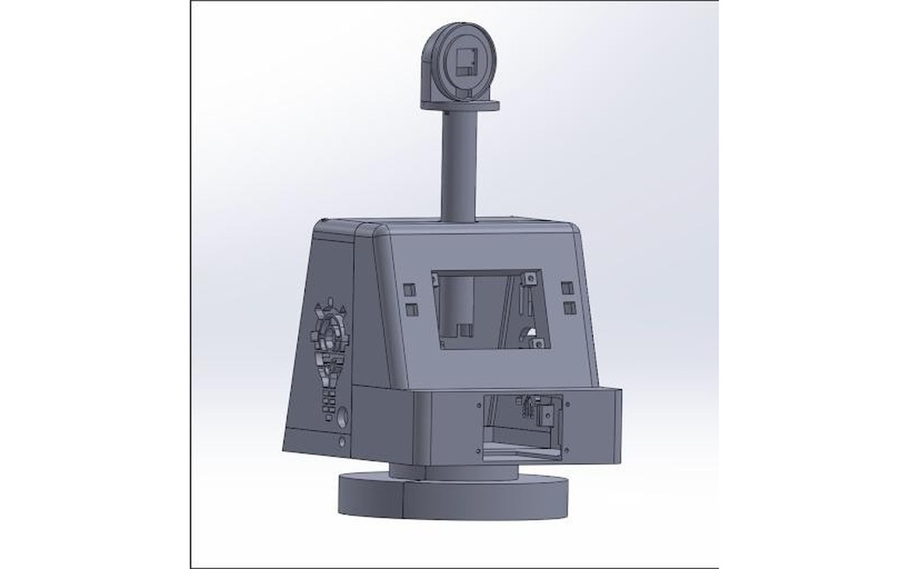

Team project
FlashBack: 270° Panoramic Photo Booth
16 frames → one 270° panorama, printed on the spot
A battery-powered booth that rotates on a servo turntable, stitches a panorama in OpenCV, and prints it as a physical keepsake. I redesigned the load path onto a ball bearing and built the stitching pipeline and touchscreen UI.
- SolidWorks
- Python
- OpenCV
- Raspberry Pi